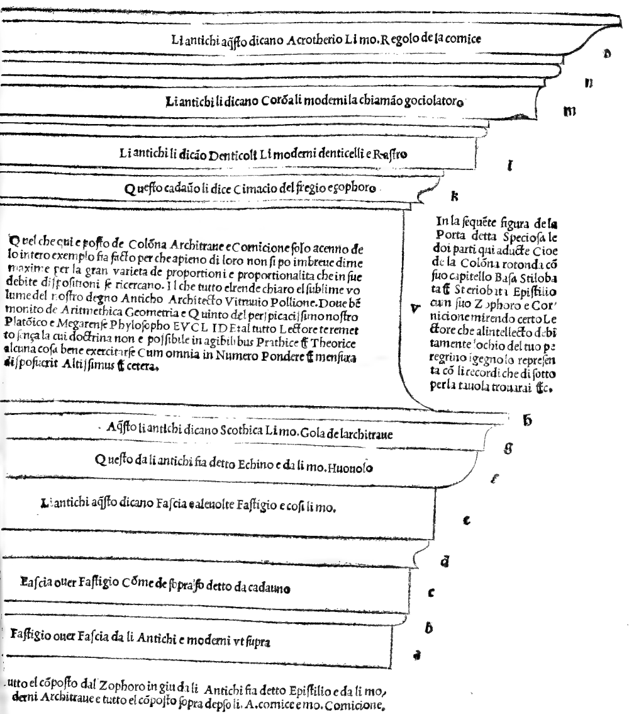

Folio 0215: Epistilio (Architrave), Zophoro (Fregio) e Cornicione¶

Epistilio (Architrave), Zophoro (Fregio) e Cornicione¶
Epistyle (Architrave), Zophorus (Frieze), and Cornice: The entire assembly below the frieze is called Epistylium by the Ancients and Architrave by the Moderns, and the assembly above it is called Cornice (with lettered mouldings a, c, e = Fascia; f = Echinus/Ovolo; g = Scotia/Gola; k = Cymatium; l = Dentils; m = Corona/Dripstone; o = Acroterium/Reglet).